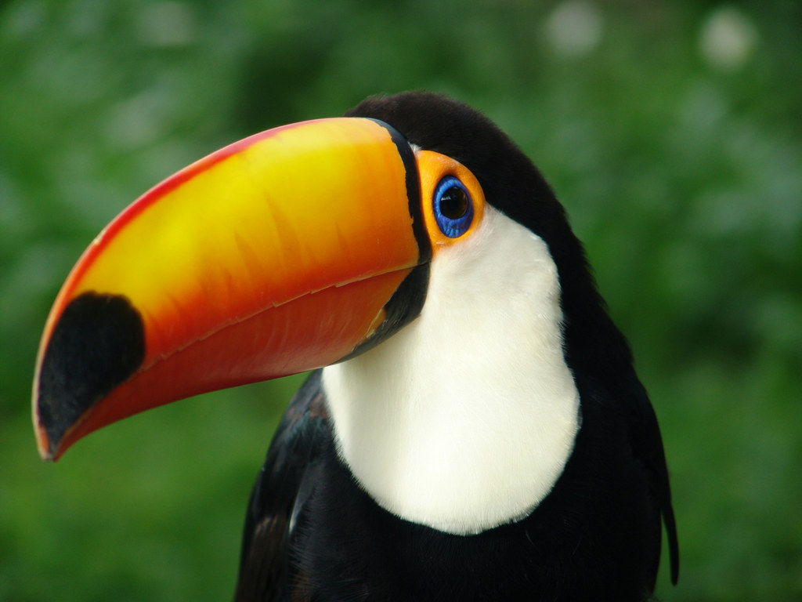

ТУКАН ВЕЛИКИЙ

ОПИС
У великого тукана незвичайне оперення: тіло його чорне, комір, груди та верхня частина хвоста білі, а нижня частина хвоста червона. Навколо очей у нього тонка блакитна шкіра, яка оточена помаранчевою, грубшою. Але найпримітнішим у нього є гігантський жовто-помаранчевий дзьоб з червоною частиною згори та чорною плямою на кінці. Він виглядає важким, але, як і в інших туканів, порожній. Язик у цього виду майже такий же довгий, як і дзьоб, і дуже плоский. Довжина великого тукана 55-65 см, довжина дзьоба майже 20 см, вага його в середньому 700 г, таким чином він є найбільшим представником родини туканів та найбільшим дятлоподібним. Самці великого тукана більші за самок, в іншому за зовнішнім виглядом вони не відрізняються. У молодих птахів більш блідий і коротший дзьоб, ніж у дорослих. Голос цих туканів неприємний, каркаючий, з частим повтором. Іноді голосно видають клацаючий закличний звук дзьобом.
СПОСІБ ЖИТТЯ
Великі тукани живляться фруктами (маракуєю та фігами), зриваючи їх з дерев, іноді комахами і навіть яйцями і пташенятами інших птахів. У неволі відомі випадки поїдання слабших особин свого виду. Довгий дзьоб використовується великими туканами для видобутку їжі у важкодоступних місцях, а також для очищення шкірки фруктів і відлякування хижаків. Зазвичай живуть парами або невеликими групами. У польоті чергують швидкі різкі помахи крил з неспішним плануванням. Розмножуються сезонно, але в різний час в залежності від регіону. Гніздо, яке зазвичай розміщують на високому дереві, складається з дупла, хоча б частина якого робиться самими птахами-батьками. Були випадки гніздування в ямах на берегах і в термітниках. Великі тукани розмножуються раз на рік. Самка відкладає зазвичай від 2 до 4 яєць через кілька днів після спарювання. Яйця насиджуються як самкою, так і самцем, пташенята вилуплюються після 17-18 днів. Птахи активно захищають себе і своє потомство.
РОЗПОВСЮДЖЕННЯ
Великі тукани поширені у східній Болівії, південно-східному Перу, північній Аргентині, східному і центральному Парагваї, східній і південній Бразилії . Невеликі популяції також зустрічаються уздовж південної Амазонки і на північ від Бразилії на узбережжі.
НАЗАД ДО МЕНЮ
НАЗАД ДО ЖИРАФА
ПЕРЕЙТИ ДО БУРОГО ПЕЛІКАНА